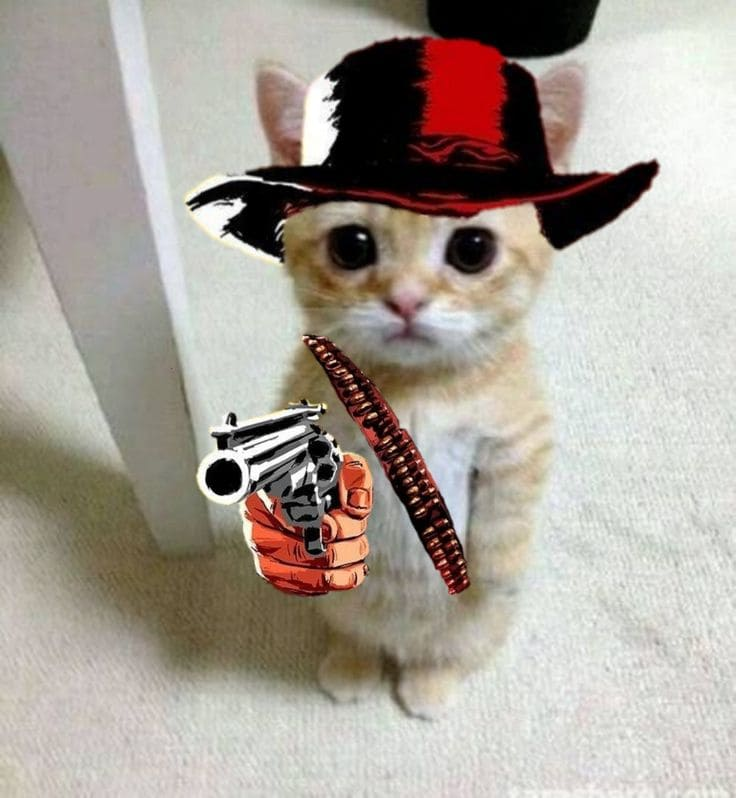
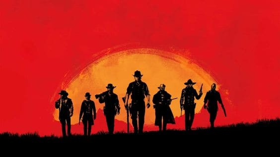

Red Dead Redemption 2
¿Qué es Red Dead Redemption 2?
"Red Dead Redemption 2" es un juego de acción y aventura de mundo abierto creado por Rockstar Games. Es la tercera entrega de la serie Red Dead y una precuela de "Red Dead Redemption" de 2010. La historia se desarrolla en una versión ficticia de Estados Unidos en 1899, donde el jugador sigue a Arthur Morgan, un forajido de la pandilla Van der Linde, mientras enfrenta el declive del Salvaje Oeste, luchando contra fuerzas gubernamentales, pandillas rivales y otros enemigos.
El juego permite explorar libremente el mundo abierto, participar en tiroteos, robos, caza y montar a caballo. Las decisiones del jugador afectan la calificación de honor del personaje y la respuesta de las autoridades a los crímenes cometidos.
Dead Redemption 2 sorprende a los fans con un detalle que pocos conocían
Cinco años después de su debut, el mundo abierto de Rockstar sigue ofreciendo curiosidades que demuestran toda la atención puesta por los desarrolladores..
 Leer másIntenté ser mi propio jefe, pero resulté ser mi propio empleado.
“Familia, brindo porque este año sí pude lograr ser mi propio jefe. Lo malo es que me debo tres quincenas”.
 Leer más
Leer más